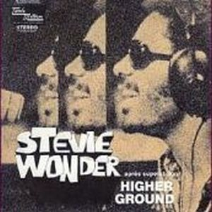

A man, a musician, an artist
A GENIUS STEVIE WONDER
Genuine, authentic, generous and supportive..., the genius with more magic of the music of our time. Virtuous on the keyboards, powerful with his voice and with an exquisite sensitivity conveying emotions flowing through delicious compositions performed masterfully. Stevie Wonder is much more than a musician, is a reference to the music of the 20th-21st century and point of inspiration for new generations create music with soul. Throught this web we only try to announce the musical excellences of this man, Stevie Wonder. In his long musical trajectory he has left one to us without end of songs and compositions.


Pioneer and visionary of music, Stevie Wonder is the first artist to put the single and album simultaneously at number one on the charts of sale, besides being the youngest person to get it. He is also the first artist in history to reach at the same time the number 1 four different Billboard charts with a song. They are 60 years creating music have seen rewarded with numerous numbers one. A good number of videos that we have been compiling both alone and accompanied by great artists. In the same way a privileged place in the most important lists of the whole world, like the Billboard, 25 awards Grammy and especially the respect of the industry of the musician and the public in general.
Despite this shortage, we have always felt close to him, since his message -wherever he is and whatever the language is- is always healthy and universal.
From The Heart Of stevie...

People keep on learnin'
Soldiers keep on warrin'
Powers keep on lyin'
While your people keep on dyin'
World keep on turnin'
Cause it won't be too long
Soldiers keep on warrin'
Powers keep on lyin'
While your people keep on dyin'
World keep on turnin'
Cause it won't be too long

Some reading and music through small extensions on the life and works of Stevie Wonder, that lets us know a little more their quality and generosity as a musician and person.
Memories from Stevie Wonder...
How to forget the splendid and delicate voice of one of the women who more has influenced in The life of Stevie Wonder. Her is Syreeta Wright, a multifaceted woman, full of mysticism, and who reached with Stevie a special connection...
Keep reading
Keep reading

Original Spanish


The Genius Of Our Time
Singer, plus a great composer, very good producer, and multi-instrumentalist, being a musician in capital letters. Since his early childhood all his life has been linked to artistic creation of rhythms and melodies that have fluid of a mind privileged and special.
Precursor in the use of synthesizers, is the key and the cornerstone to display the soul music of today.
Covers of songs
Stevie Wonder
Stevie Wonder

Thanks to his extraordinary compositions, we can find a number of versions of Stevie Wonder performed by other artists worldwide.
A memory of one of them by the hand of ...
Manoella Torres: "Tú Eres Todo para Mi (You Are The Sunshine Of My Life)"
With his debut in the record world in the year 1962 with only 11 years old, we can enjoy a rich and varied discography that covers already several decades and fully introduced in this 21st century.